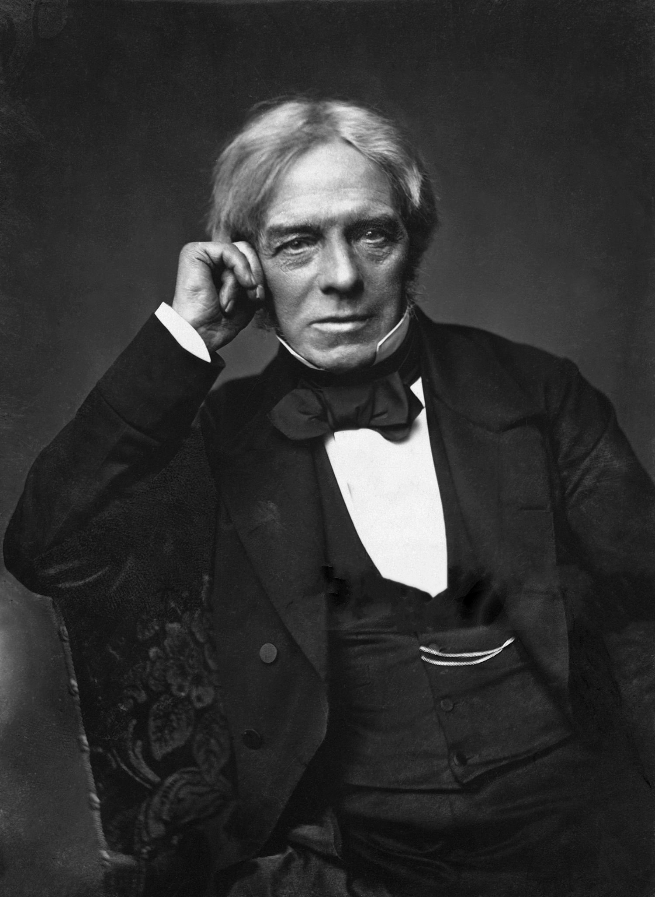

Michael Faraday, le champ invisible
Portrait n°28 — l'homme qui a rendu visible ce qui n'existait pas
Œuvre de fiction radiophonique et biographique à caractère historique et patrimonial. Les faits présentés dans cet article sont réels et sourcés ; l'entretien est une reconstitution imaginée.


🎧 Écoutez le portrait : Michael Faraday — Le champ invisible, 14 min 09 — Écouter sur Spotify →
Qui était Michael Faraday ?
Michael Faraday naît le 22 septembre 1791 à Newington Butts, dans le sud de Londres, troisième de quatre enfants. Son père est forgeron, venu du nord de l'Angleterre chercher du travail ; la famille est pauvre, souvent malade, et Faraday se souviendra d'une semaine entière avec un seul pain pour quatre. La maison est fidèle des sandemaniens : la science est un service rendu aux autres.
À treize ans, il entre comme commis dans la librairie de George Riebau ; à quatorze ans, on en fait son apprenti relieur, pour sept ans et sans prime à payer. Il plie, coud, recoud des livres — et son patron, par chance, lui laisse lire les ouvrages qui passent entre ses mains : l'article sur l'électricité de l'Encyclopædia Britannica, un livre de Jane Marcet. Il fabrique avec des bouteilles vides une machine électrostatique. Un billet de théâtre, offert par un client de la librairie, William Dance, lui permet d'assister aux dernières conférences de Sir Humphry Davy. En 1812, il expédie à Davy un cahier de notes de trois cents pages ; il n'y a pas de poste. Peu après, une explosion blesse Davy à l'œil : il se souvient du cahier, et nomme Faraday assistant chimique le 1er mars 1813.
1821 : le premier moteur électrique
En septembre 1821, Faraday pose un aimant dans un bain de mercure et fait passer un courant dans un fil de cuivre qui plonge dans le métal liquide : le fil se met à tourner autour de l'aimant. Fragile et lent — mais c'est un moteur.
29 août 1831 : la nuit de l'induction
Dans un sous-sol d'Albemarle Street, l'institut royal, un soir d'août 1831, Faraday prend un anneau de fer — le même qu'il avait vu dans l'atelier de son père. D'un côté, un long fil de cuivre relié à une pile ; de l'autre, un second fil relié à un galvanomètre. Il ferme le circuit : l'aiguille bondit. Il l'ouvre : l'aiguille bondit en sens inverse. Ce n'est pas la présence du courant qui agit, mais le changement lui-même. Faraday a trouvé l'induction électromagnétique, et avec elle la clé de l'électricité pratique : transformateur, dynamo, câble sous-marin. Puis il fait tourner un disque de cuivre entre les pôles d'un aimant : la première dynamo.
La guerre des lignes de force
À Paris, Ampère avait bâti une admirable théorie de l'électro-magnétisme, où les actions étaient instantanées et à distance : l'aimant agissait sur le fil comme si le vide n'existait pas. Faraday ne pouvait admettre qu'une force agisse sans qu'il y ait autour d'elle quelque chose qui la transmette. « Je voulais voir le champ. » Il invente alors l'image la plus utile de sa vie : les lignes de force. Sautez de la limaille de fer sur une carte posée sur un aimant, et vous voyez les lignes : ce ne sont pas des traits, ce sont des directions dans l'espace où la force agit. Il appelle cela un champ.
C'est là que se joue la guerre contre les newtoniens, tenants de l'action instantanée à distance. Faraday n'a ni les mathématiques de Maxwell ni le rang de ses pairs : il a des fils, du fer, des aimants. Mais Maxwell écrira que ses lignes de force le faisaient un mathématicien de haut rang.
1833-1834 : les lois d'électrolyse et les mots anode, cathode
En 1833 et 1834, Faraday publie la première et la deuxième loi de l'électrolyse. La première : la quantité de matière décomposée par un courant est proportionnelle à la quantité d'électricité qui a circulé. La seconde : pour une même quantité d'électricité, les masses déposées sont proportionnelles aux poids atomiques équivalents des éléments. Autrement dit, l'électricité ne fait pas de chimie à peu près : elle en fait à l'exact. Et il forge au passage anode, cathode, ion.
1836 : la cage de Faraday
En 1836, Faraday met au point une cage : une grande cage de bois, de papier et de grillage, montée sur quatre supports de verre dans la salle de conférences de l'institut royal. Il s'y enferme deux jours entiers, avec un électromètre et une grande boule de laiton. La charge électrique se tient à l'extérieur du métal, et rien de ce qui est dedans ne s'en aperçoit : il synthétise le principe du blindage électrostatique. Deux ans plus tôt, son disque de cuivre avait ouvert l'ère des dynamos ; c'est aussi l'année du verre des phares.
1845 : « J'ai enfin réussi à aimanter un rayon de lumière »
Depuis 1836 et 1837, Faraday cherchait à savoir si l'électricité agissait sur la lumière ; les premiers essais ne donnaient rien. En 1845, il place un morceau de verre lourd entre les pôles d'un électro-aimant et envoie à travers un faisceau polarisé : le plan de vibration de la lumière tourne. Il note dans son carnet : « J'ai enfin réussi à aimanter un rayon de lumière. » Il nomme cela l'effet Faraday magnéto-optique, qui sert encore à mesurer les champs magnétiques.
1855 : la Tamise, Noël, et le refus des honneurs
En 1855, Faraday écrit une lettre au Times sur la Tamise : il a jeté du papier blanc dans le fleuve — les morceaux disparaissaient avant d'avoir coulé un pouce. La rivière entière était un fluide brun et opaque, et l'odeur, celle d'un égout à ciel ouvert. Trois ans plus tard, l'été de 1858, la Grande Puanteur frappe Londres : de là le projet d'égouts de Bazalgette.
Entretemps, Faraday donne ses conférences de Noël à l'institut royal : dix-neuf, entre 1827 et 1860. La série qui a fait date est celle de la fin : 1856 sur l'attraction, 1857 sur l'électricité statique, 1858 sur les propriétés métalliques, 1859 sur les forces de la matière, 1860 sur l'histoire chimique d'une chandelle — la série 1856 à 1860.
Il refuse le chevalier : sa foi et sa vie simple ne s'y accordaient pas. Il refuse deux fois la présidence de la Société royale. « Un homme qui dirige une société savante, ce n'est plus un savant, c'est un fonctionnaire. »
Après Tomatis, Pythagore, Beethoven et Marie Curie, la série atteint ici le savant qui a donné ses noms au monde moderne : le champ, l'induction, l'électrolyse, la cage. Il meurt le 25 août 1867.